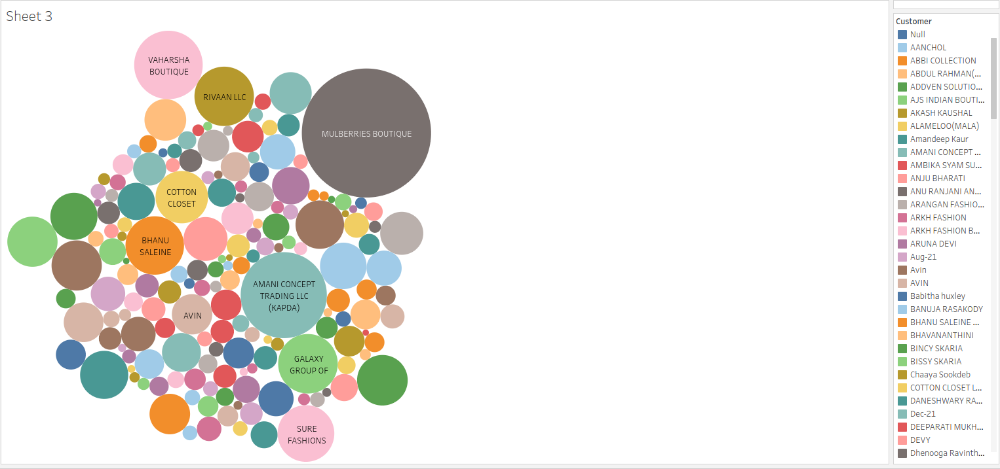
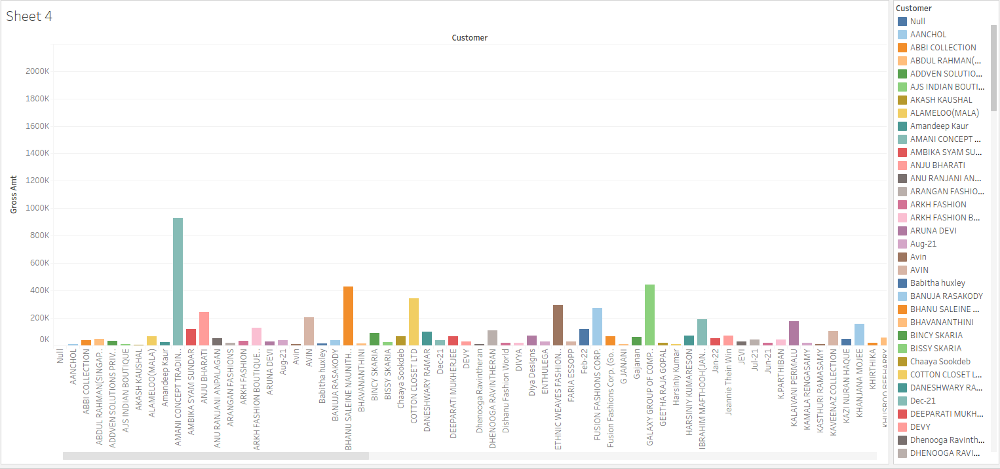
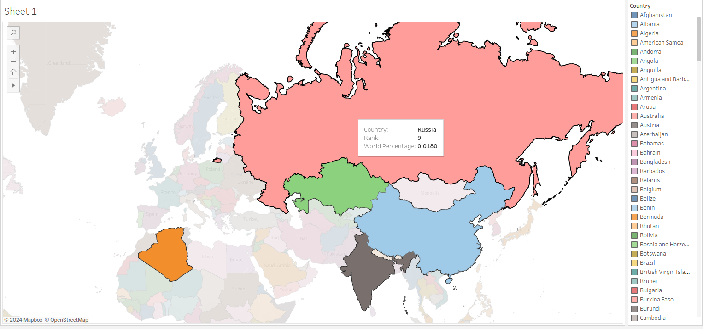

The colorful bar graph visualizes pay distributions across nations and experience levels. By visualizing wage data across countries and experience levels, we may uncover inequalities and trends in compensation structures. Insights: Bars of differing lengths reflect wage ranges for different nations and experience levels, allowing for comparisons and trend analysis. Discrepancies in bar heights reveal differences in income levels across nations and experience groups, providing insight into worldwide compensation patterns.
The colorful bubble chart illustrates the relationship between customers and gross amounts. Visualizing gross amounts in connection to customer transactions allows us to discover high-value consumers and transaction frequencies. Insights: Larger bubbles reflect consumers with higher transaction values, showing their importance in terms of revenue generating. Variable bubble colors and sizes allow for rapid detection of transaction patterns and client groupings based on gross amounts.
The colorful bar graph visualizes gross amounts over time for various consumers. By visualizing gross amounts over time for specific customers, we can track revenue patterns and client spending habits. Insights: Bar heights represent gross amounts for individual customers and years, enabling trend analysis and anomaly discovery. Color gradients show substantial changes over time, with darker colors signifying greater values and lighter shades denoting lower values.
The colored map depiction displays countries according to their rankings and global percentages. By color-coding countries based on their rankings and percentages, we can learn about global distribution patterns and market shares. Insights: Countries with deeper hues have higher rankings and bigger world percentages, indicating their dominance in the worldwide market. Lighter-colored countries have lower ranks and a smaller global share, indicating nascent markets or specialist sectors.